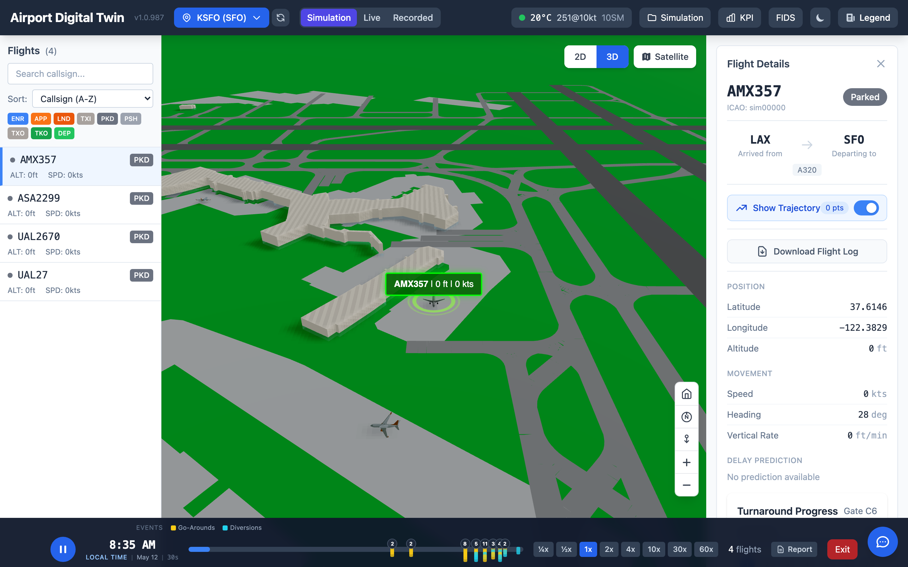
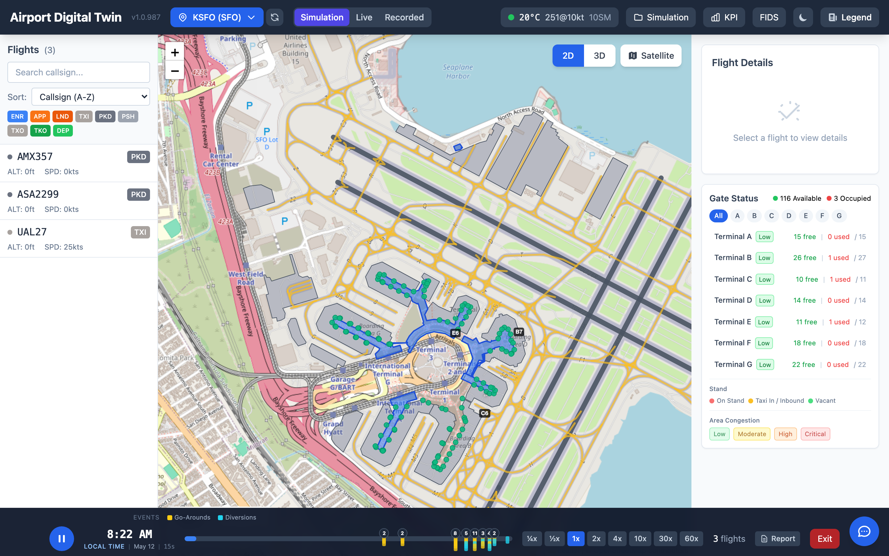
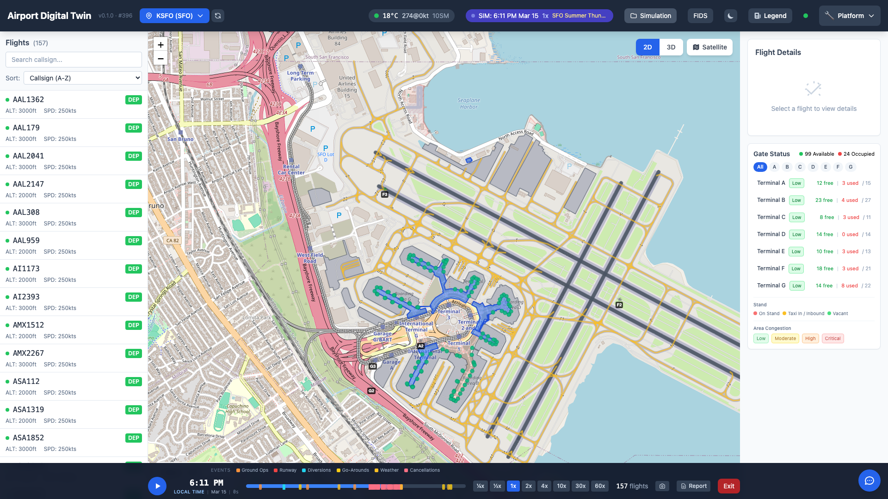
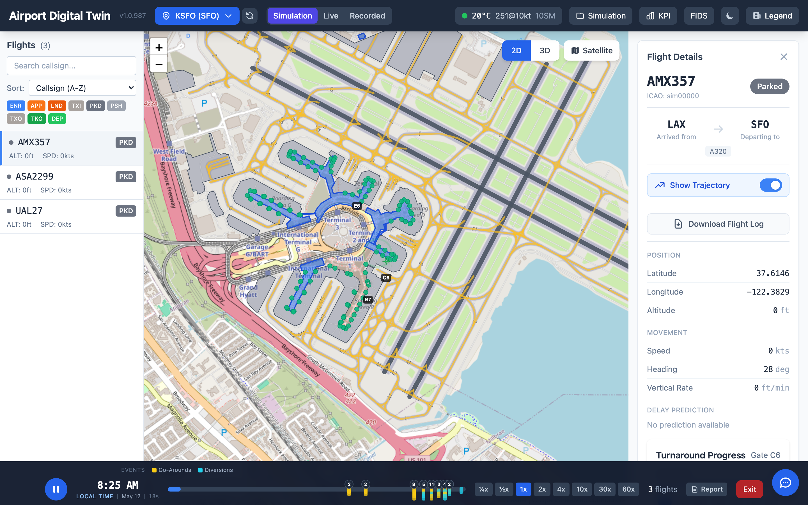

How Databricks Genie transforms the way operations teams interact with live data

Real-time 3D view of San Francisco International — every aircraft, every gate, every second. This is the data Genie answers questions about.
There's a moment in every operational review where someone asks a question the dashboard doesn't answer.
The flight delay report shows departure performance. Someone asks: "Are delays clustering around a specific gate cluster during the morning bank?" The analyst digs in Excel. Thirty minutes later, the meeting is over.
This is the problem Databricks Genie was built to solve — and why I've started thinking about it less as a BI tool and more as an AI coworker.

The operational data layer — 116 gates, live flight positions, terminal congestion, all in one view. This is what Genie queries when you ask "which terminal has the most pressure right now?"
Genie is Databricks' natural language interface to your data. You ask questions in plain English. It generates SQL, runs it against your Unity Catalog tables, and returns answers — with the query it used, so you can audit or extend it.
But that description undersells it.
The real shift is contextual continuity. Genie maintains conversation state, so you can drill down without restating what you're analyzing:
"Show me departure delays by hour for the last 7 days."
"Now break that out by terminal."
"Filter to delays over 20 minutes."
"Which airlines have the highest variance?"
Each question builds on the last. That's not query execution — that's collaborative analysis. That's a coworker.
Most BI tools are built around a consumer model: someone builds a dashboard, others consume it. The analyst is a gatekeeper. Every ad-hoc question becomes a ticket.
The AI coworker model flips this. Instead of a gatekeeping analyst, you have a collaborating one. Operations managers, fleet coordinators, ground crews — anyone with domain context can interrogate the data themselves, at the speed of thought, without writing SQL.
This isn't about replacing analysts. It's about multiplying them. The analyst's time shifts from answering repetitive questions to building the data models and governance structures that make Genie accurate — and to tackling the genuinely hard questions Genie surfaces but can't answer alone.
After deploying Genie in production against live operational data, here's what I've observed:
It excels at:
It struggles with:
dep_airport and arr_airport and origin_code, Genie will pick one, but it may pick the wrong oneThe fix for most struggle cases is the same: better documentation in Unity Catalog. Column comments, table descriptions, and Genie's instruction layer are what transform a generic SQL generator into a domain-fluent coworker.
Genie Agents (formerly Genie Spaces) include an instruction layer — free-text guidance you write to teach Genie your domain.
This is where you encode things the schema can't: "departure delay is calculated from gate push-back, not scheduled departure," "TBIT refers to the Tom Bradley International Terminal," "when analyzing on-time performance, exclude diversions."
Think of the instruction layer as onboarding documentation for your AI coworker. A good onboarded analyst knows the business rules. A well-instructed Genie does too.
The teams getting the most value from Genie are the ones investing in this layer. The teams who complain "Genie got it wrong" are usually the ones who skipped it.

SFO during a summer thunderstorm simulation — 157 active flights, weather events, runway closures, gate pressure across all terminals. A scenario where every minute of faster analysis matters.
Here's a concrete example from a live deployment.
An airport operations center runs Genie against three Unity Catalog tables: flight_status_gold (current flights), flight_positions_history (position telemetry), and gate_assignments.
The ops manager starts their shift and asks:
"How many flights are currently delayed over 30 minutes?"
Genie: 14 flights. Here's the query.
"Which gates are associated with the most delays?"
Genie: Gates B12–B18, clustering in the B concourse. Here's the distribution.
"Is this unusual compared to yesterday at this time?"
Genie: Today's B concourse delay rate is 2.3× yesterday's.

Drilling down to a single flight — origin, destination, gate assignment, position telemetry, delay prediction — all from one natural language question chain.
Now the ops manager has something actionable. They call the ground coordinator for B concourse. This took four minutes, not forty.
That's the AI coworker in action: not replacing judgment, but accelerating the information flow that judgment depends on.
If you want to deploy Genie as an operational AI coworker, here's the minimal path:
1. Curate one gold table per domain
Don't point Genie at raw or silver tables. Give it a clean gold layer with business logic already applied. Fewer joins, cleaner semantics, better answers.
2. Write the instruction layer as if onboarding a smart intern
What does a new team member need to know to answer questions about this data correctly? What abbreviations exist? What business rules apply? Write that down, in plain English, in the Genie instructions.
3. Start with power users, not everyone
Deploy Genie to two or three people who know the domain well. They'll catch wrong answers and tell you why. Use their corrections to refine the instructions. Then expand.
There's a meta-point here worth naming.
As AI-assisted search becomes the default way buyers evaluate tools, the ability to surface in AI-generated shortlists depends on whether useful, specific content about your tools exists on the open web.
Genie is genuinely differentiated — its Unity Catalog integration, its instruction layer, its context persistence — but that differentiation doesn't help if the engineers and analysts making decisions never encounter it when they ask ChatGPT or Perplexity "what's the best AI coworker for data teams."
The best marketing for a tool like this is people who use it writing honestly about what it does well, where the edges are, and how they'd deploy it. Not press releases. Not feature announcements. Real operational experience.
This article is my version of that.